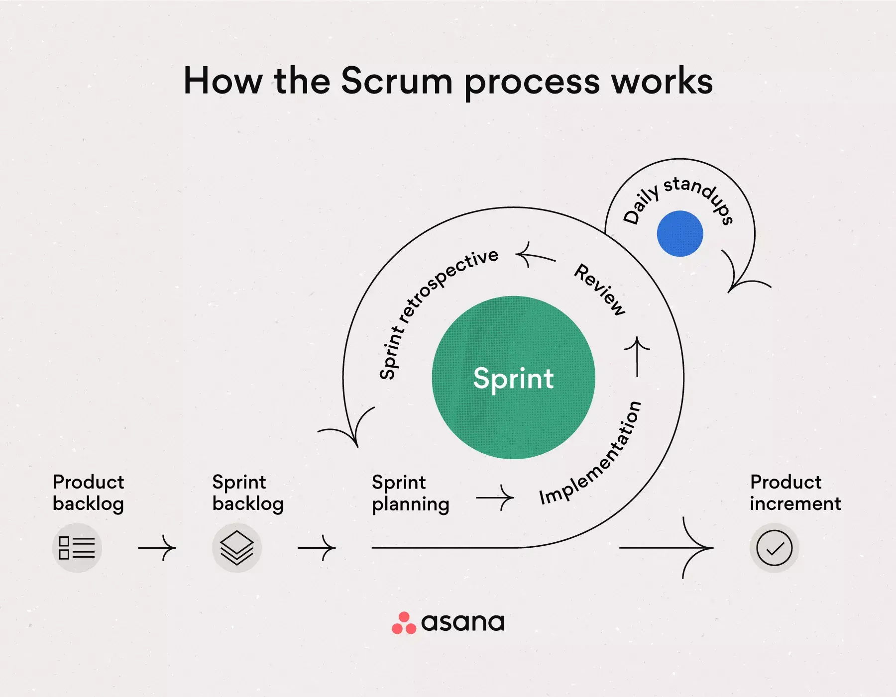
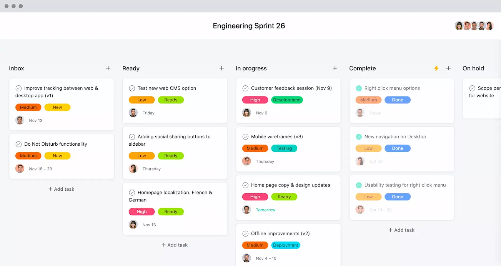
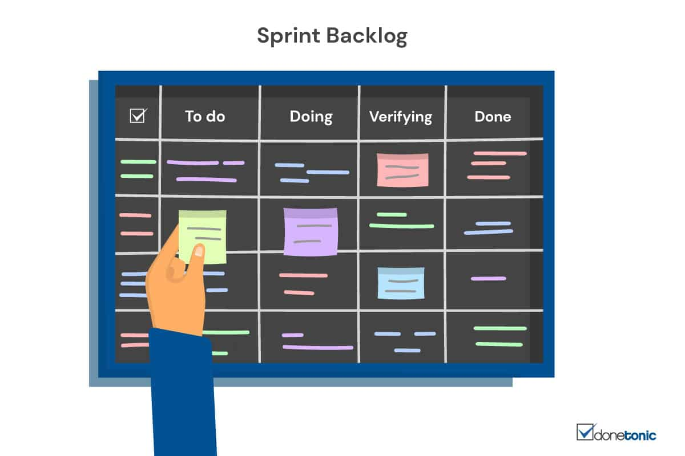
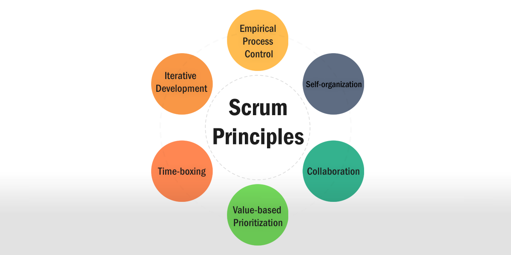

Scrum
What is Scrum?
Scrum is an Agile framework that helps teams collaborate and get high-impact
work done. The Scrum framework provides a blueprint of values, roles, and
guidelines to help your team focus on iteration and continuous improvement.
The Scrum workflow breaks large projects into smaller fragments that your team
can work on quickly and iteratively. Because the Scrum process builds off of
itself and encourages iterative repetition, you can use Scrum to continuously
improve upon your deliverables until the entire project is completed.
The history of Scrum

“Scrum” as it exists today was first introduced in a 1986 Harvard Business
Review article “The New New Product Development Game”, written by Hirotaka
Takeuchi and Ikujiro Nonaka. Takeuchi and Nonaka took the name “Scrum” from
rugby, explaining that “as in rugby, the ball gets passed within the team as it
moves as a unit up the field.”
Scrum was further developed and codified by Ken Schwaber and Jeff Sutherland in
1995, when they published their Agile Manifesto and SCRUM Development Process.
Schwaber and Sutherland’s Scrum was partly a rejection of the waterfall model of
software development. In the waterfall model, projects are broken into sequential
phases, where each phase’s deliverables unlock the next phase of work. Schwaber
and Sutherland believed software developers could benefit from a more flexible,
iterative approach that allowed them to continuously respond and adapt to their
environment in order to build the best product for their customers.
Since their initial publication, Schwaber and Sutherland have published the Scrum
Guide—a living document they update on a regular basis. According to the Scrum
Guide, Scrum encourages “teams to take a look at how effective their work
techniques are, and challenges teams to continuously evolve and improve them.”
How the Scrum process works
Traditionally, Scrum is run in a sprint, which are usually two-week-long
working sessions with specific deliverables due at the end.
There are two additional Scrum events:
- Daily standups. As the name suggests, daily standups happen once a day.
These are an opportunity for the Scrum team to connect for 15 minutes and
coordinate daily activities.
- Sprint retrospective. This occurs once the sprint is over. During the sprint
retrospective, which will be run by the Scrum master, the team has a chance to
reflect on their sprint and make adjustments for future sprints.
The most important thing to know if you’re going to run a Scrum process is that
the Scrum framework relies on a system of continuous improvement. In Scrum, you
recognize you might not know anything at the start of a sprint—and you can adjust
your processes and needs as needed based on the information you gain during the
sprint process.

Scrum events
Scrum events, or ceremonies, are the recurring elements
of each sprint. Each event serves a specific purpose to ensure the
sprints are structured and productive.
- Organize your backlog. To begin a Scrum sprint, your team lead will
identify what work to pull from your product backlog—i.e., work that
needs to be done. In order to have the best Scrum sprint possible,
make sure you have your product backlog clearly documented in one
place. Consider using a project management tool to organize all of
this information.
- Hold a sprint planning session. Before you can start your Scrum
sprint, you need to know what you’ll be focusing on and why. In this
stage, you’ll define the sprint goals and convey to your team why the
sprint is valuable to shareholders. From there, you’ll determine which
sprint backlog tasks you’ll tackle during this specific Scrum sprint
and how the work will get done.
- Start your Scrum sprint. Typically, a sprint is two weeks long,
though you can have shorter or longer sprints depending on what works
best for your team. During your sprint, your team will work on the
items from your backlog that you’ve outlined during your sprint
planning session.

- Host daily Scrum standups. Plan to meet with your Scrum team for 15
minutes every day. Daily standup meetings are your chance to debrief
about what you’re working on and triage any unexpected blockers you
may have run into.
- Present your work during the sprint review. Once you’ve finished
your Scrum sprint, your team should come together for a sprint review.
During this time, your Scrum team will present the work that’s “Done”
for stakeholder approval or inspection.
-
Connect and reflect during the sprint retrospective. After your
sprint is over, take some time to discuss how it went and what could
be improved in the future. Remember that Scrum believes in a process
of continuous improvement—so don’t be afraid to try new processes or
rework strategies that feel less effective during your next sprint.
While these events may seem repetitive, it’s important to include them
in every sprint, especially if you’re new to Scrum. By doing so,
you’ll ensure that all departments are on the same page and all
feedback has been addressed. The events are designed to keep the
sprints moving quickly and smoothly.
Scrum artifacts
In Scrum, an artifact is something you make, like a tool to solve a problem.
There are three artifacts in Scrum: the product backlog, the sprint backlog, and
the product increment.
Product backlog

The product backlog is the master list of work that needs to be done. This list
should be triaged by the project manager or product owner. Note that just because
something is in the product backlog doesn’t mean your team will work on it—rather,
items in the product backlog are options that your team can work on during a Scrum
sprint. The project owners should frequently reorder and refresh the product
backlog, based on new information from customers, from the market, or from the
project team.
Sprint backlog

The sprint backlog is the collection of work or products your team has committed
to for the duration of a Scrum sprint. These items are chosen from the product
backlog during the sprint planning session, and moved to your team’s sprint
planning project if you have one.
Your team may not deliver everything in the backlog during every sprint, but it’s
unlikely that you’ll add to the sprint backlog mid-sprint. If you find yourself
doing that frequently, spend more time on the sprint planning phase so you have a
concrete idea of what you’ll be working on during your sprint.
Product increment
The product increment is what you will deliver at the end of a sprint. This can be
a new product or feature, an improvement or bug fix, or anything else depending on
your team. Plan to present your increment during the sprint review. At that point,
it will ship or not ship based on what the Scrum stakeholders think about the
increment and whether it is “Done.”
In Scrum, nothing is perfect, because your team is flexible and iteratively
improving. So “Done” doesn’t mean “this can’t get better”—but rather that your
Scrum team will stop working on it, for now.
For example, here are a few definitions of “Done” for different Scrum teams:
- Product is ready to be released.
- Product has been tested and is ready to be released in a beta environment.
- Product has been acceptance tested and is releasable to all users.
No matter what your team’s definition of “Done” is, make sure everyone is on the
same page. Once you have your definition, it’s helpful to keep it in a central
source of truth and reference it frequently, especially during your sprint review.
Scrum roles
In Scrum, team members are assigned to three specific roles: product owner, Scrum
master, and Scrum team. These roles are used to assign specific tasks to team
members.

Product owner
This is the person in charge of the product backlog. They’re connected to the user
needs and focused on telling the story to their team and other executive
stakeholders. Good product owners bring clarity about what’s most important to
deliver next. Ultimately, they should be the person deciding when something is
ready to ship (with a bias toward shipping frequently).
Scrum master
The Scrum master is the person running the various Scrum events. Think of them as
the Scrum project manager and facilitator. The Scrum master should facilitate the
daily standup meetings and host the sprint planning, review, and retrospective
meetings.
Scrum team
The Scrum team is everyone who is working on the sprint. Team members should be
self-organizing and collaborative in order to achieve the Scrum goal of continuous
improvement.
The 6 Scrum principles
Scrum also relies upon six basic principles to ensure the team maintains
focus and keeps projects on track. The six principles are:

- Control over the empirical process. Scrum teams believe in transparency, inspection, and adaptation.
- Self-organization. Though your Scrum team will have roles and rules,
every Scrum member is empowered to take ownership of their tasks and their work.
Scrum believes that shared ownership leads to more creative and dynamic teams.
- Collaboration. Your team will deliver the best results if you work
together during and after the Scrum sprint.
- Value-based prioritization. The goal of a Scrum sprint is to deliver the best business value.
In order to do that, you have to prioritize your work from the very onset of the Scrum process.
- Timeboxing. The Scrum process has various time-based activities, such as the sprint itself,
daily standups, and the retrospective. Because Scrum works on a belief of continuous improvement,
it’s important to timebox work in order to move on to the next task and improve future work.
- Iterative development. In Scrum, your first product won’t be perfect.
But by building iteratively, your team will be most able to adapt to
customer needs and modify the product and your outputs based on value-based prioritization.
The 5 values of Scrum
In order to benefit from Scrum, teams need to adhere to the
five main Scrum values, as defined in the Scrum Guide:

- Commitment: The Scrum team is a unit—and team members need to trust one another.
Scrum team members are committed to the sprint for its duration,
and dedicated to continuous improvement in order to find the best solution.
- Courage: During a Scrum, the team might encounter difficult problems
that have no exact answer. Scrum teams have courage in asking open,
difficult questions and answering honestly in order to arrive at the best solution.
- Focus: During any given Scrum sprint, the Scrum team will work from a product backlog.
The Scrum team is focused on the work they’ve chosen from the backlog in order to
hit their deliverables by the end of the sprint.
- Openness: Not everything will go perfectly during Scrum.
Scrum team members must be open to new ideas and opportunities that both help them
individually learn and can help improve their product or process.
- Respect: Collaboration is the key to Scrum—and in order to support team collaboration,
team members have to respect one another, the Scrum master, and the Scrum process.
allikad:
asana
mooc
donetonic
scrum.org
scrum.as
scrum.org